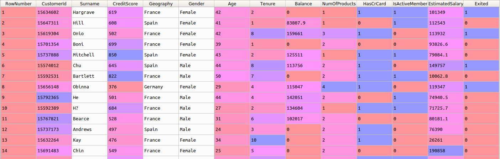

The banking project was my first intro into building my own artificial neural networks. I followed a tutorial from the SuperDataScience team in a Udemy course, which used the Keras and Tensorflow
libraries to predict outcomes on a set of banking information. The dataset included values describing customers of a bank, including their country of origin, value of their account, years active and
several other features commonly associated with bank accounts, for a total of 13 features. Our goal was to predict whether or not a member would terminate their accounts given the features.

Most of these features are relevant, except "Row ID", "Customer ID" and "Surname", so the dataset was changed to reflect that. Using the SciKit-Learn library, I had to encode the categorical
data to something a neural network could process. The gender column only had two possibilities, so this could be converted to a binary output. Geography contained a small range of values, so
OneHot encoding was the way to go. This created one new column for each unique category, and set the corresponding column to "1" for each row.
#encoding categorical data
from sklearn.preprocessing import LabelEncoder, OneHotEncoder
labelencoder_X_1 = LabelEncoder() #for countries
X[:, 1] = labelencoder_X_1.fit_transform(X[:, 1])
labelencoder_X_2 = LabelEncoder() #for gender
X[:, 2] = labelencoder_X_2.fit_transform(X[:, 2])
onehotencoder = OneHotEncoder(categorical_features = [1])
X = onehotencoder.fit_transform(X).toarray()